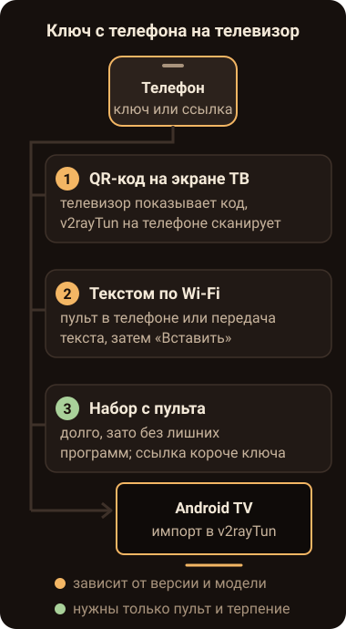

Откуда ставить
Сам по себе v2rayTun никуда не подключает. Это клиент на ядре Xray: в него добавляют ключ или подписку от какого-то сервиса, и разработчик прямо пишет, что сам доступ к серверам не продаёт. Версия для Андроида одна на все устройства, и в её карточке в Google Play среди поддерживаемых устройств указан телевизор (на октябрь 2026).
На телевизоре с Android TV или Google TV приложение находят в Google Play самого телевизора, голосом с пульта или поиском по буквам. Есть способ и без набора: откройте карточку v2rayTun в Google Play на телефоне под тем же аккаунтом Google, что на телевизоре. В меню рядом с кнопкой установки можно выбрать другие устройства аккаунта, и приложение встанет на телевизор, когда тот будет в сети. В карточке сверьте разработчика, сейчас это DATABRIDGES TECHNOLOGIES LTD: в магазине хватает приложений с похожим названием и значком.
Без Google Play выбор беднее. Официальный сайт v2rayTun для Андроида отправляет в Google Play, отдельного установочного файла там нет. APK из каталогов и с зеркал на GitHub выложили сторонние люди, и проверить, та ли внутри сборка, нечем. А клиент туннеля видит весь трафик телевизора.
На Яндекс ТВ Google Play нет, а пустит ли прошивка сторонний файл, зависит от модели. Об этом подробнее в статье «Яндекс ТВ или Android TV». На Samsung и LG v2rayTun не встанет вовсе: у них Tizen и webOS, а приложение сделано для Андроида. Для таких телевизоров есть один путь, приставка на Android TV во втором входе HDMI, о ней в разделе про Samsung и LG.
Как донести ключ с телефона до телевизора
В описании приложения перечислены четыре способа импорта: QR-код, буфер обмена, диплинк и ручной ввод. На телевизоре половина из них работает не так, как на телефоне. Камеры у него нет, общего буфера с телефоном тоже, а диплинк срабатывает при нажатии на ссылку, и нажать её на экране телевизора негде.

QR-код показывает телевизор
Здесь всё наоборот: код выводит на экран телевизор, а сканирует его телефон, на котором уже стоит v2rayTun с нужным ключом. Импорт на Android TV по QR-коду разработчик называет одной из функций приложения. Пункт ищите в меню добавления конфигурации на телевизоре. Меню от версии к версии переименовывают, поэтому точный путь мы не пишем.
В отзывах в Google Play жаловались, что в одной из версий форма на телефоне закрывалась сразу после сканирования и до телевизора ничего не доходило. Разработчик в ответ советовал обновить приложение. Обновите его на обоих устройствах; если код всё равно не принимается, переходите к способам ниже.
Текст через телефон
Приложение Google TV на телефоне работает пультом для приставок с Google TV и части Android TV, и у этого пульта есть клавиатура. Поставьте курсор в поле адреса на телевизоре, нажмите значок клавиатуры в приложении и вставьте строку, скопированную на телефоне. Телефон и телевизор должны быть в одной сети Wi-Fi.
Другой путь даёт программа для передачи файлов и текста между устройствами, если она стоит и на телефоне, и на телевизоре. Строку отправляют на телевизор, там нажимают «Копировать», а в v2rayTun выбирают импорт из буфера обмена. Буфер в этом случае свой, телевизорный, и строка лежит в нём, пока вы не скопируете что-нибудь другое.
Набор с пульта
Если ничего из этого нет, остаётся экранная клавиатура. Ключ vless://
с параметрами тянется на сотню-другую знаков, в нём заглавные буквы, дефисы и знаки вопроса,
так что пультом его набирают долго. Ссылка подписки обычно короче, и по ней клиент сам обновляет
список серверов. Когда сервис выдаёт и ключ, и подписку, на телевизор берите подписку.
Набирайте по четыре-пять знаков и после каждой группы сверяйтесь с телефоном. Чаще всего
путают строчную l с единицей и букву O с нулём. Ещё одна ловушка в самом начале строки: часть
экранных клавиатур сама делает первую букву заглавной, а с Vless://
или Https:// импорт обычно не проходит.
Где спотыкаются пульт и экран
| Что видно на экране | Что сделать |
|---|---|
| После установки значка v2rayTun нет на главном экране | Откройте полный список приложений или «Настройки» → «Приложения». Оттуда значок можно добавить на главный экран. |
| Стрелками не дойти до нужной кнопки | Нажмите «Назад» и зайдите на экран заново. Если не помогло, подключите USB- или Bluetooth-мышь: Android TV её понимает. |
| Нажали включение, а туннель не поднялся | В первый раз система спрашивает разрешение на подключение. Если окно закрыли кнопкой «Назад», включите ещё раз и выберите OK. |
| Ключ добавлен, но соединение обрывается сразу | Проверьте дату и время на телевизоре: при сбитых часах шифрованное соединение не проходит проверку. |
| После перезагрузки туннель выключен или работает другой клиент | Android держит один туннель на всю систему. Выключите автозапуск во втором приложении. |
| Подписка добавилась, а серверов в ней ноль | Клиент не узнал формат строк в подписке. Опечатка тут ни при чём, нужен другой клиент. |
Бывает, что на телефоне ключ работает, а телевизор сервис не пускает. v2rayTun передаёт серверу подписки модель и идентификатор устройства, и сервисы, которые считают устройства, видят телевизор отдельно от телефона. Сколько устройств разрешено на одном ключе, спросите у того, кто его выдал.
Подробнее о том, почему на телевизоре два клиента туннеля мешают друг другу и как по признакам понять, что подписка попала не в тот клиент, написано в статье про сторонний клиент на Android TV.
Если ссылка от Siberian
Основная ссылка нашей подписки отдаёт серверы на протоколе naive. Ядро Xray, на котором собран v2rayTun, такого протокола не знает: в Google Play у приложения перечислены VLESS, VMess, Trojan, Shadowsocks и SOCKS. Если добавить нашу основную ссылку в v2rayTun, подписка появится в списке, а серверов в ней не будет.
Для запасного клиента INCY в кабинете есть вторая ссылка на отдельные серверы VLESS. В v2rayTun мы её не проверяли и работу там не обещаем, да и сам INCY на телевизоре пока не проверен. На Android TV у нас проверен Karing. Его установочный файл лежит в кабинете на вкладке «ТВ» рядом с короткой ссылкой подписки. В уникальной части ссылки нет заглавных букв и пар вроде нуля и O, так что путать при наборе с пульта в ней нечего. Как поставить файл и какие галочки отметить в Karing, написано на странице про Android TV, про набор ссылки там же, во втором шаге.
По правилам подписки одновременно работают устройства одного человека, не больше чем из двух сетей. Телевизор на домашнем Wi-Fi и ваш телефон в той же сети считаются одной.